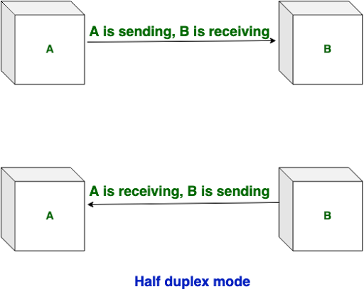

What is Internet?
Network: When two or more computers are connected with wired and wireless and share their resources(in the form of Images, Videos, etc) it is called a Network.
The real meaning of Network/Internet is "Sharing".
Few important Point
- The Network is created by the Fiber Optic Cable across the world.
- Through these cables transfer data from one end to another at almost the speed of light. (The speed of light approx 3 lakh Kilometer/second).
- Internet is a worldwide global system of interconnected computer networks.
- Internet uses the standard Internet Protocol (TCP/IP).
- Every computer on the internet is identified by a unique IP address.
- IP Address is a unique set of numbers (such as 192.168.1.1) that identifies a computer location.
- A special computer DNS (Domain Name Server) is used to give a name to the IP Address so that the user can locate a computer by a name.
- For example, a DNS server will resolve a name www.lovecomputer.co.in to a particular IP address to uniquely identify the computer on which this website is hosted.
- Internet is accessible to every user all over the world.
Diagram of Internet: how the Internet works

There are three types of Networks:
1. Internet: The network formed by the cooperative interconnection of millions of computers, linked together is called the Internet.
2. Intranet: It is an internal private network built within an organization using the Internet and World Wide Web standards and products that allow employees of an organization to gain access to corporate information.
3. Extranet: It is the type of network that allows users from outside to access the Intranet of an organization.
There are three types of data communications mode in a network:-
1. Simplex Mode: In simplex mode data only go to one way. Example: Radio, Television (इस तरीके में जानकारी सिर्फ एक ही तरफ़ जाती है)

2. Half Duplex Mode: In Half Duplex mode sender can send the data and also can receive the data but one at a time. It is two-way directional communication but one at a time. Example: Walkie- talkie, physical example: Post office (इस तरीके में जानकारी एक समय में एक ही तरफ से दूसरी तरफ जाती है)
3. Full Duplex Mode: In Full Duplex mode, Sender can send the data and also can receive the data simultaneously. It is two-way directional communication simultaneously. Example: Mobile, landline Phone. physical example: face to face (इस तरीके में जानकारी एक ही समय में एक तरफ से दूसरे और दूसरी तरफ से पहली तरफ जा सकती है)
Protocol (नियम):
There are many rules in the Internet network system like any other system through which it runs smoothly and makes this system good and fair.
This network works on OSI(open system interconnect) Model.
| Layer | what it role | where it is work |
|---|---|---|
| 7 - Application | Where humans process data and information | Software Level |
| 6 - Presentation | Ensrues data is in a usable format | Software Level |
| 5 - Session | Capable of maintaining connections | Software Level |
| 4 - Transport | Data is forwarded to a service cable of handling requests | connects the software with the hardware |
| 3 - Network layer | Accountable for which path packets should travel on a Network. | Hardware |
| 2 - Data Link | Accountable for which physical devices packets should go to | Hardware |
| 1 - Physical | The Physical infratructure to transport data | Hardware |
Note: SDN ("Software Defined Networking") is technology which allows more layers of the hardware to be implemented via software.
Roles of Layers with Protocal
Layer 7 - Application Layer
- HTTP ("Hypertext Transfer Protocol") - Enables us to access web applications.
- FTP ("File Transfer Protocol") - Allows users to transfer files.
- SNMP ("Simple Network Management Protocol") - Protocol to read and update network device configurations.
Note: There are many applications which uses these protocols like Google Chrome, Microsoft Edge and FileZilla.
Layer 6 - Presentation Layer
- Encoding Schemes used to represent text and data, for example ASCII(American Standard Code for Information Interchange) and UTF(Unicode Transformation Format).
- Encryption for services, for example SSL ("Secure Sockets Layer") and TLS ("Transport Security Layer").
- Compression, for example GZip in use in many implementations of HTTP.
Layer 5 - Session Layer
- SOCKS - A protocol for sending packets through a proxy server.
- NetBIOS - An older Windows protocol for establishing sessions and resolving names.
- SIP ("Session Initiation Protocol") - For engaging in VOIP ("Voice Over IP") communications.
Layer 4 - Transport Layer
- TCP ("Transmission Control Protocol") - Used for many applications, ensuring stability, control of how much data can be sent at any given time, reliability and more.
- UDP ("User Datagram Protocol") - Lightweight and quick protocol use for many services.
- QUIC ("Quick UDP Internet Connections") - A protocol designed for faster connections and goes hand-in-hand with the version 2 of the HTTP protocol.
Layer 3 - Network Layer
- IP ("Internet Protocol") - Used everyday when accessing the Internet. Comes in two versions, IP version 4(192.168.0.1) and 6(2a00:1450:400f:80a::200e).
- ICMP ("Internet Control Message Protocol") - Used by network devices and network operators, to diagnose network connections or for devices to send and respond to error conditions and more.
- IPSec ("Internet Protocol Security") - Allows encrypted and secure connections between two network devices.
Layer 2 - Data-Link Layer
- Ethernet - An essential protocol used by most operating systems when connecting to networks using a physical cable.
- Wi-Fi ("Wireless Fidelity") - For accessing networks via radio signals. It uses a family of protocols called IEEE 802.11.xx.
- NDP ("Neighbor Discovery Protocol") - IP version 6(IPv6) uses this protocol on the Link Layer to gather information required to communicate via IPv6.
Layer 1 - Physical Layer
- Ethernet - An essential protocol used by most operating systems when connecting to networks using a physical cable.
- Wi-Fi ("Wireless Fidelity") - For accessing networks via radio signals. It uses a family of protocols called IEEE 802.11.xx.
- NDP ("Neighbor Discovery Protocol") - IP version 6(IPv6) uses this protocol on the Link Layer to gather information required to communicate via IPv6.
VPN ("Virtual Private Network")
A VPN is a system which enables two system to establish encrypted forms for communication, enabling network traffic to be encrypted in transit. Many VPN's is a client to server architecture, allowing the client to access multiple services behind the VPN. VPN's hosted by your work place is also likely to provide access to resources otherwise only accessible from the inside.
Spread Knowledge with Practical
THIS WEBSITE HAS A MOTIVE TO SPREAD THE INFORMATION ABOUT Web
Development.
Developed by Tarun Kumar
Click here for Blog